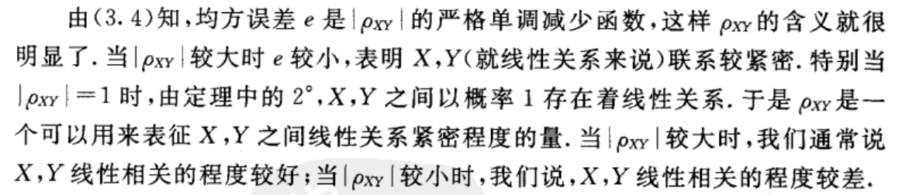
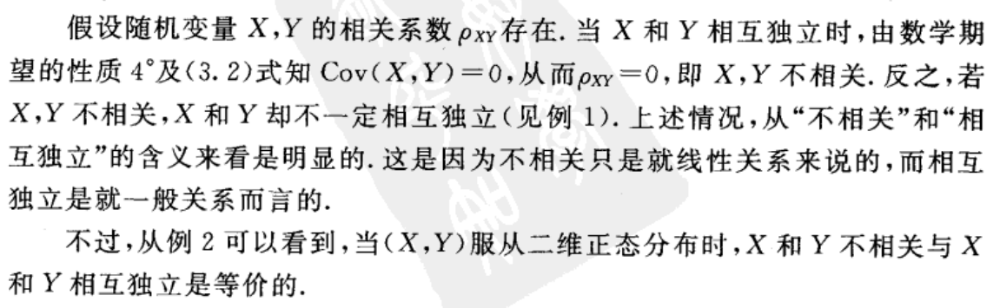
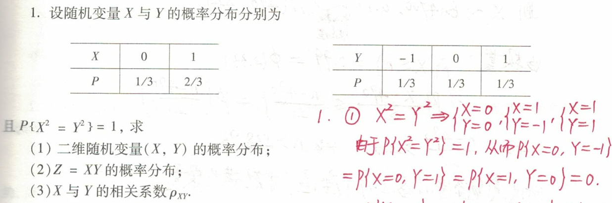
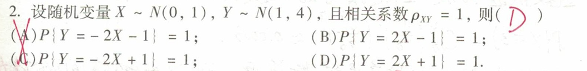

定义ρXY=Cov(X,Y)D(X)D(Y)\rho_{X Y}=\frac{\operatorname{Cov}(X, Y)}{\sqrt{D(X)} \sqrt{D(Y)}}ρXY=D(X)D(Y)Cov(X,Y)定理1∘∣ρXY∣⩽1.2∘∣ρXY∣=1的充要条件是,存在常数a,b使P{Y=a+bX}=1.1^{\circ}\left|\rho_{X Y}\right| \leqslant 1.\\2^{\circ}\left|\rho_{X Y}\right|=1 的充要条件是, 存在常数 a, b 使\\\\P\{Y=a+b X\}=1 .1∘∣ρXY∣⩽1.2∘∣ρXY∣=1的充要条件是,存在常数a,b使P{Y=a+bX}=1.若ρXY>0则为正相关, ρXY<0则为负相关\rho_{XY}>0则为正相关,\ \ \rho_{XY}<0则为负相关ρXY>0则为正相关, ρXY<0则为负相关意义特别的ρXY=0⇔X和Y不相关\rho_{XY}=0\Leftrightarrow X和Y不相关ρXY=0⇔X和Y不相关不相关≠不独立例题说明X,Y不相关的等价条件E(XY)=E(X)E(Y)⇔D(X+Y)=D(X)+D(Y)⇔Cov(X,Y)=0⇔PXY=0⇔X,Y不相关E(X Y)=E(X) E(Y)\\\Leftrightarrow D(X+Y)=D(X)+D(Y)\\\Leftrightarrow \operatorname{Cov}(X, Y)=0\\\Leftrightarrow P_{X Y}=0\\\Leftrightarrow X, Y 不相关E(XY)=E(X)E(Y)⇔D(X+Y)=D(X)+D(Y)⇔Cov(X,Y)=0⇔PXY=0⇔X,Y不相关例题